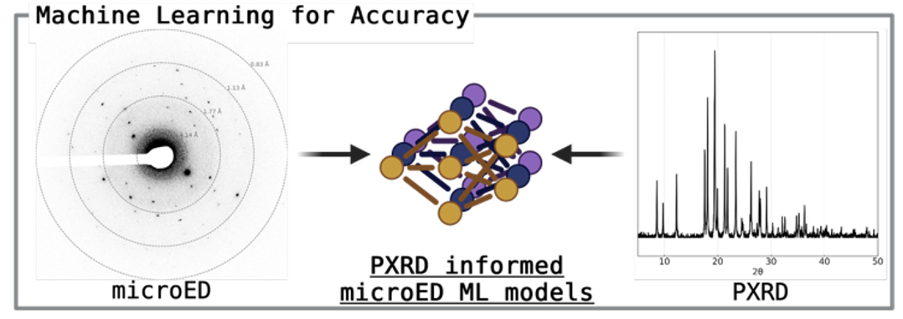
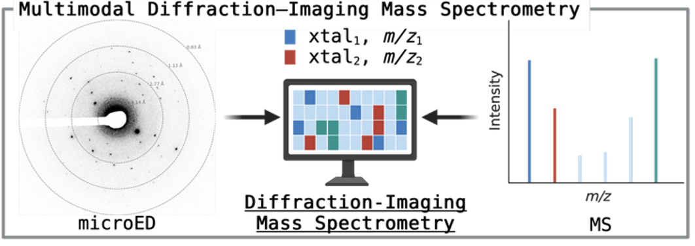
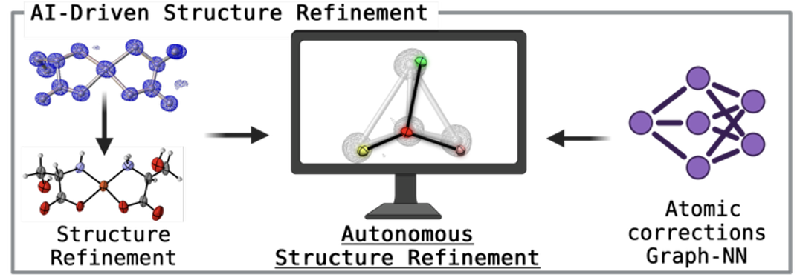

Thrust I
ML-accurate diffraction

Machine learning that reconciles nanoscale microED with bulk powder X-ray standards — for accurate, reproducible measurement.
We build AI-assisted structural data science to visualize and control molecular structure at the nanoscale — connecting atomic structure to the bulk properties of real materials, one crystal at a time.

Machine learning that reconciles nanoscale microED with bulk powder X-ray standards — for accurate, reproducible measurement.

A multimodal platform assigning atomic structure and chemical identity crystal-by-crystal in complex mixtures.

Autonomous structure refinement that closes the loop between data acquisition and structure elucidation.
We build the molecules and crystals we study — leveraging non-covalent interactions at air–water interfaces for efficient synthesis of building blocks and added-value chemicals. Shared infrastructure: mass spectrometry, electron microscopy, and TACC.

Combining physical chemistry, electron diffraction, materials science, and machine learning to reveal how atomic structure gives rise to chemical properties. Previously Caltech (Nelson), UCLA (Rodriguez), USC (Fokin), and the Zelinsky Institute (Ananikov).
We're recruiting curious, rigorous students and postdocs into crystallography, mass spectrometry, machine learning, and interfacial synthesis. Tell us what you want to work on.
eremin@utexas.edu